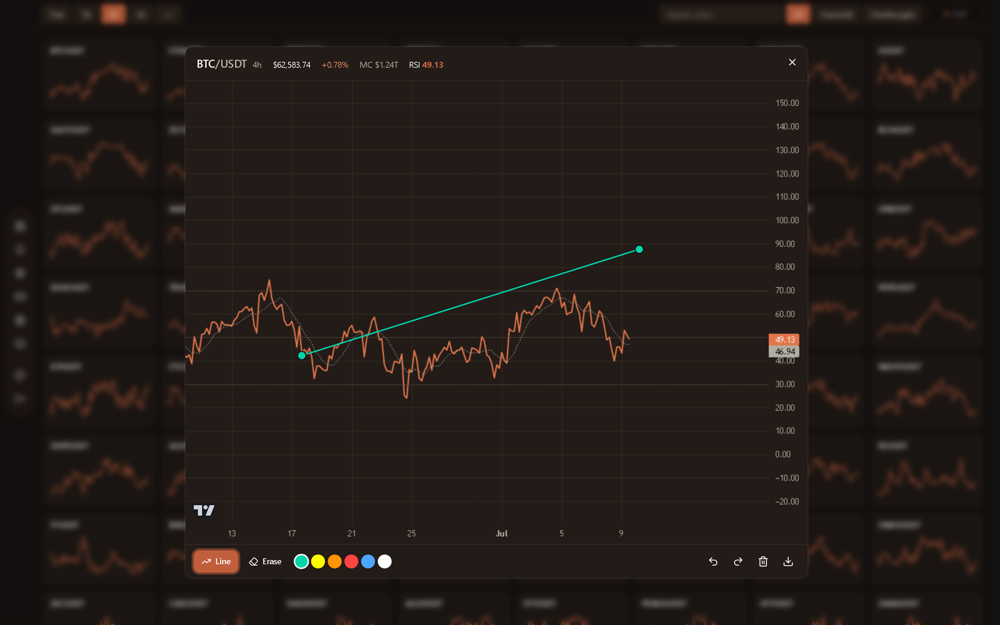

RSI Screener turns the entire Binance spot market into a single live wall of Relative Strength. Hundreds of pairs, fifteen timeframes, computed on the server and streamed to a dense, fast scanner.
Everything below is the real logged-in tool, recorded live. The source stays private.

Five recordings from the live, logged-in product on the Terracotta theme. No mockups, no demo data.
One tile per symbol, each with a live RSI sparkline. Scroll hundreds of pairs and read where momentum is stretching in a single pass.
Dim the whole wall down to only the oversold or overbought names in one tap. The handful of pairs that matter light up while everything else fades back.
Type a ticker, press enter, and jump from the wall into a full RSI chart with price history and a live reading, without leaving the keyboard.
A custom canvas charting engine, not a library. Draw trendlines, switch colours, undo and redo, clear, and export the chart to PNG.
Fully responsive down to a two-column wall, with the timeframe strip, search, filters and live status intact.
A responsive PWA shell with a fast app-shell cache and a graceful offline screen. Add it to the home screen and it behaves like an app.
The browser reads compact pre-computed snapshots, so the wall stays fast even on mobile data.
The core design choice is centralization. The server owns market polling and RSI math, then every visitor reads a small warm snapshot. It scales with a cache, not with user count.
A single always-on Next.js server, no serverless cold starts. Webhooks can be missed, so subscription state reconciles against Paddle on read: a paying customer is never locked out by a dropped event.
Market-cap ranked Binance spot pairs, computed server-side so the client never hits an exchange rate limit.
A hand-built canvas chart with RSI, moving average, zoom, pan, drawing tools and PNG export. No charting library.
Pre-computed snapshots aligned to candle closes make page loads instant and keep payloads tiny.
Auth with email OTP, JWT sessions, protected access, Paddle billing, a settings-sync layer and a PWA shell.